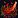
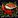
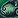
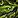
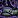
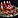
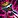
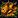
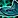
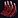

This Legion Cooking leveling guide will show you the fastest way how to level your Cooking skill from 1 to 100.
This Legion Cooking leveling guide will show you the fastest way how to level your Cooking skill from 1 to 100.
Legion altered the process of leveling cooking. Cooking skill does not limit which Legion recipes are available. The number of dishes produced by each cook varies with recipe ranks.
Learning Legion Cooking
Visit your trainer Awilo Lon'gomba (Horde), or Katherine Lee(Alliance) at Dalaran and learn Legion Cooking.
Recipe ranks
Every Legion cooking recipe has 3 ranks. Higher rank recipes allow you to cook more food for the same materials, and higher rank recipes also give skill points much longer. (the exceptions are the new Feast recipes, you always make one, but it will cost fewer materials)
If you hover over the little stars in your spellbook, you can see the source of the next rank for the selected recipe.
Unlocking Cooking Research
The best cooking recipes and every rank 2 and rank 3 recipes are unlocked by doing research at Nomi's test kitchen at Dalaran.
To unlock the cooking research, you have to find a cooking recipe in the world, then Nomi will spawn near you, and offer you a quest:  Too Many Cooks - Horde /
Too Many Cooks - Horde /  The Prodigal Sous Chef - Alliance. (If you don't have any new legion recipe yet, and Nomi haven't offered you the quest, then you can get one of the recipes below)
The Prodigal Sous Chef - Alliance. (If you don't have any new legion recipe yet, and Nomi haven't offered you the quest, then you can get one of the recipes below)
The follow-up quest is  A Good Recipe List. You must learn 6 Legion Cooking recipes. Sometimes it doesn't count your cooking recipes correctly, but a quick logout should fix it.
A Good Recipe List. You must learn 6 Legion Cooking recipes. Sometimes it doesn't count your cooking recipes correctly, but a quick logout should fix it.
These 6 recipes are the easiest to get:
| Recipe | Source |
|---|---|
| Dropped by Mordvigbjorn at Stormheim. | |
| To get this recipe, you must do three short quests from King Mrgl-Mrgl (at 42.7, 10.9). These quests are Slime Time, | |
| You have to finish the following 3 quests at Highmountain for this recipe. First, you must do | |
| Get | |
| Dropped by Myonix at Suramar. | |
| Kill Salteye Murlocs at Azsuna until you get [Okuna's Message]. This item begins the quest |
Work Orders and Cooking Research
If you completed  A Good Recipe List, you are now able to start Work Orders for any type of Legion meat or fish you have in your bags.
A Good Recipe List, you are now able to start Work Orders for any type of Legion meat or fish you have in your bags.
You can start work orders if you talk to Nomi near your cooking trainers. Nomi takes various meat, fish, and animal byproducts for Work Orders, 5 at a time.
Each Work Order takes 4 hours to complete. Creating a Work Order with a specific ingredients has a chance to teach you a recipe that uses that ingredient.
Getting new recipes from the research is not 100%. There is a high chance you will only get [Badly Burnt Food].
1 - 50
Use [Lean Shank] for research until you get 
55 x [Rank 2 - Salt and Pepper Shank] - 275 x Lean Shank, 110 x Flaked Sea Salt, 110 x Dalapeno Pepper
If you get the [Rank 3 - Salt and Pepper Shank], you can use that to level up to 70 or even 80.
You can also use [Wildfowl Egg] for research if you choose Faronaar Fizz. (or any other meat/fish, but these are the cheapest)
50 - 100
There are only 8 recipes that you can use to level cooking to 100. 7 of them come from cooking discovery, and you need the rank 2 versions because the rank 1 recipes turn grey at 80. Rank 3 would be the best option, but the chance to get these rank 3 recipes is really low.
If you are revered with the Wardens, then you can buy  [Recipe: Spiced Falcosaur Omelet] from Marin Bladewing at Azsuna and use that to level to 100. You will need a lot of [Falcosaur Egg], around 120-150.
[Recipe: Spiced Falcosaur Omelet] from Marin Bladewing at Azsuna and use that to level to 100. You will need a lot of [Falcosaur Egg], around 120-150.
You can choose from one of these recipes below and pick one of the ingredients to use as research until you get the rank 2 recipe. You can get duplicate recipes, therefore it's a good idea to check your workorder often and learn the rank 1 recipe before you finish more work orders, so you have a chance to get rank 2 and not another rank 1.
List of recipes and the meat/fish needed for research:

[Azshari Salad] - Research: [Lean Shank] or [Runescale Koi]- [Crispy Bacon] - Research: [Slice of Bacon]
 [Fishbrul Special] - Research:
[Fishbrul Special] - Research: 
[Cursed Queenfish],
[Mossgill Perch],
[Black Barracuda], [Highmountain Salmon]
[Lavish Suramar Feast] - Research: You can get this from everything, but before you can even discover this recipe, you first need to have discovered and learnt the separate Rank 1 recipe components to it (not including bacon).- [Nightborne Delicacy Platter] - Research: [Wildfowl Egg], [Black Barracuda],

[Leyblood] 
[Seed-Battered Fish Plate] - Research: [Runescale Koi], [Silver Mackerel],
[Silver Mackerel], 
[Stormray]- [The Hungry Magister] - Research: [Highmountain Salmon], [Fatty Bearsteak],

[Big Gamy Ribs], [Leyblood]
All of these recipes above are green between 90-100 (at rank 2), so you won't gain skill points for every craft! You will probably have to cook around 70-90 from one of them to reach 100. If you are lucky enough to get the rank 3, then you only have to craft 50 because it gives guaranteed skill points up to 100.
I hope you liked this Legion Cooking leveling guide, congratulations to 100!